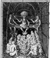

Wahunsenacawh (1550-1618), 1607 yılında Jamestown’daki İngiliz yerleşimcileri ile karşılaşan yerli Amerikan kralıdır. Aynı zamanda koloni lideri John Smith’in (1580-1631) hayatını kurtaran genç prenses Pocahontas’ın da (1595-1617) babasıdır.

Powhatan adıyla da bilinen Wahunsenacawh, Virjinya sahilindeki Algonquin Kabile Konfederasyonu’nun en güçlü lideriydi. 1550 yılında doğduğu tahmin edilmektedir. Konfederasyonun başkenti olarak Werowocomoco’yu seçmişti. 14 Mayıs 1607’de bu yerli köyünün yakınlarına İngilizler yerleşecekti.
Algonquin avcıları, Smith’i yakalamış ve onu Wahunsenacawh’a teslim etmişlerdir. Smith’e göre, onu idamla tehdit etmiş olsalar da, Pocahontas ona acıyıp babasından mahkumun canını bağışlamasını istemiş ve bu sayede Smith kurtulmuştur.
Wahunsenacawh daha sonra Jamestown’daki ilk yıllarında İngiliz yerleşimcilere yiyecek satmaya karar vermiştir. Hatta yerleşimcilerle karşılıklı bir yardımlaşma ilişkisi dahi kurabilecekleri umudunu taşımaktadır. Ne var ki 1610-1614 yılları arasında iki taraf arasında bir savaş yaşanır. Savaş sırasında yerli Amerikan köyleri tahrip edilecektir. Pocahontas da bu sırada esir düşer. Şef, savaş sonrasında yapılan barış anlaşmasında kızının İngiliz bir sömürgeci olan John Rolfe (1585-1622) ile evlenmesine izin vermeye zorlanır.
Anlaşma kısa sürecek bir barış döneminin başlangıcı olur. Pocahontas ve kocası 1616 yılında İngiltere’ye giderler. Pocahontas burada bir asil olarak görülür ve Kral 1. James’le (1566-1625) tanıştırılır. 1618 yılında Wahunsenacawh’ın ölümünden sonra kardeşi Opechancanough iktidarı ele geçirir ve 1622 yılında yeniden savaş başlar.
Ek Bilgiler
1- 1977 yılında arkeologlar Werowocomoco’nun yerini saptadılar. Jamestown’dan 19 km uzaklıkta, York Nehri’nin üzerindedir.
2- 2005 yapımı “The New World” (Yeni Dünya) filminde ünlü şefi August Schellenberg (1936–) canlandırmıştır. Amerikan yerli aktivisti Russell Means (1939–) ise Disney yapımı animasyon filmi “Pocahontas”ta (1995) Wahunsenacawh’ı seslendirmiştir.
3- Wahunsenacawh ve kabilesi tarafından konuşulan Algonquin dili 18. yy sonlarına doğru yok olmuştur. Bununla birlikte bu dilden İngilizce’ye pek çok kelime geçmiştir: “raccoon” (rakun), “terrapin” (su kaplumbağası), “moccasin” (makosen) ve “tomahawk” (savaş baltası) gibi.